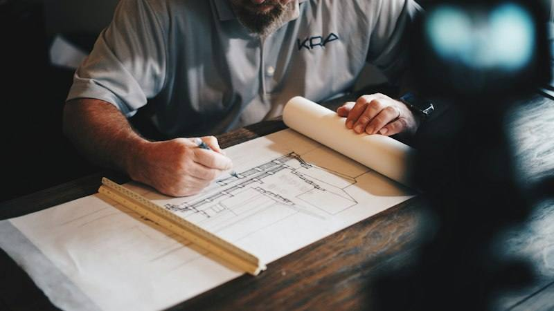

Mezunlar ne yapar?
- Opera ve konser sanatçısı
- Koro sanatçısı
- Şan eğitmeni
İlk yıl ve temel dersler
Farklı okulların ilk yıl ve temel ders listelerinden örnekler.
BİLMENİZ GEREKEN
Başvurmadan önce
Boston University'de İngilizce ve İtalyanca diksiyon ikinci yılda, Almanca ve Fransızca diksiyon üçüncü yılda okunuyor. Kaynak meslekleri ayrıca listelemediği için yukarıdaki alanlar şan eğitiminin genel yollarıdır.
OKUL ÖRNEKLERİ
Benim Yerim testini çözün Bu bölümü okuyabileceğiniz okullardan örnekler
2 ülkeden 2 okul. Programlar okulların kendi sayfalarından kontrol edildi. Bunlar yalnızca örnek; her ülkede çok daha fazla seçenek var. Bütçenize, belgelerinize ve hedeflerinize uygun okulları birlikte seçiyoruz.
 ABD
ABD
 Macaristan
Macaristan
TASARIM VE SANAT
Bu alandaki diğer bölümler
Mimarlıkİç MimarlıkŞehir ve Bölge PlanlamaGrafik TasarımModa TasarımıEndüstriyel TasarımSinema ve TelevizyonMüzikGüzel SanatlarTiyatro ve Sahne SanatlarıAnimasyonPeyzaj MimarlığıİllüstrasyonÜrün TasarımıKompozisyonSahne TasarımıKostüm TasarımıOyunculukMüzik Teknolojisi ve Ses TasarımıUX TasarımıOyun Tasarımıİletişim TasarımıGörsel İletişimTakı TasarımıTekstil TasarımıKentsel TasarımMobilya TasarımıDansMüzik ProdüksiyonuGörsel Efekt (VFX)Senaryo YazarlığıMüzikal TiyatroSürdürülebilir ModaAkıllı ŞehirlerYapay Zekâ ve YaratıcılıkYaratıcı TeknolojilerBiyotasarım
Son kontrol: Kasım 2026.

Opera ve Şan size uygun mu?
İlgi alanlarını, güçlü dersleri ve hedef ülkeleri konuşup bölüm ve okul seçeneklerini birlikte daraltalım.